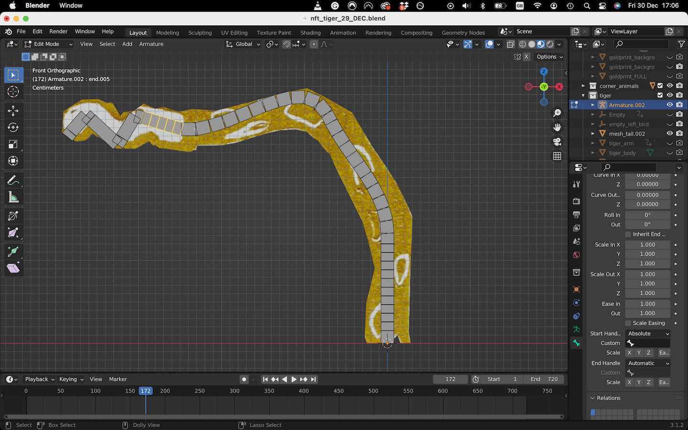
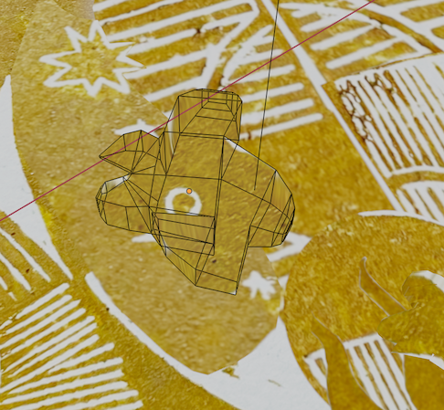

Maintain Perspective - The Gold Print (2023)
Commissioned by Karimah Hassan to create an animated version of her gold linoprint for her NFT Collection
What appeared like a simple task of animating 2D elements of an image, proved to be a challenge!
I decided to animate this in Blender. At first, that might seem like an overly complex software to use for this project but it was the tool that could give me the most control.
Constructing bendy bones to make a smooth moving tail
The biggest challenge was how to achieve a smooth and rich movement of the tail with just a 2D image. It was super janky until I stumbled upon the 'bendy bones' feature in Blender. This can squish and stretch an armature more naturally.
Projecting image from view onto mesh
Process video showing my animation technique
- Cut the image into separate png files. Save cut outs of each animal/piece that is going to be animated
- In front view, trace over part of the image I want to cut out, extruding and editing faces of a cube.
- In edit mode, select all faces -> project from view -> UV unwrap -> in UV editor, drag mesh to correct part of the image
~Prep the image
~Changed tactics to do cut outs straight in Blender

Pre-processing photo of print. Cutting out flowers that are going to be animated and filling the blank spots with other parts of the image.
Sound was out of scope of project but decided to go back to add some more touches using the 'Soundly' app. I hope to incorporate sound more in the future as I think it's an integral part of making an animation feel more alive.